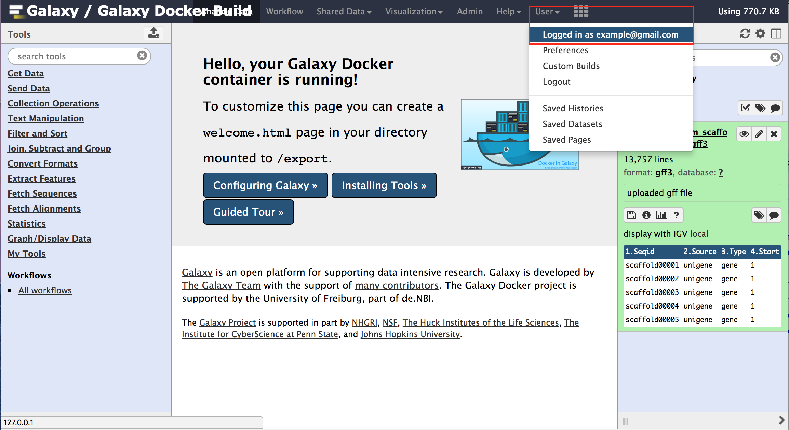
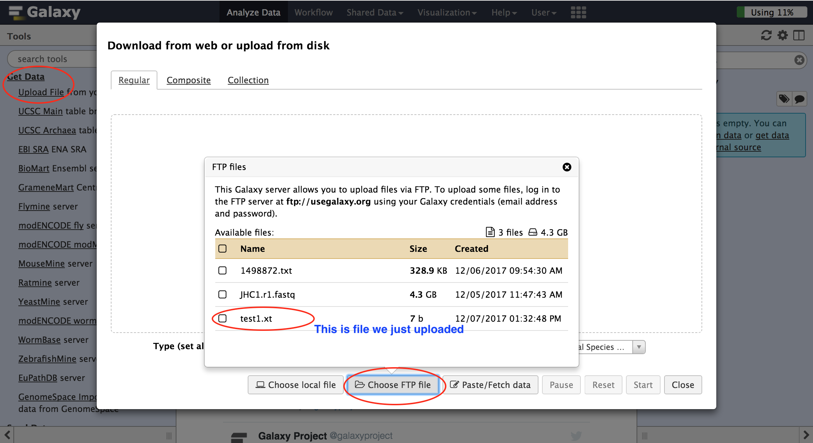
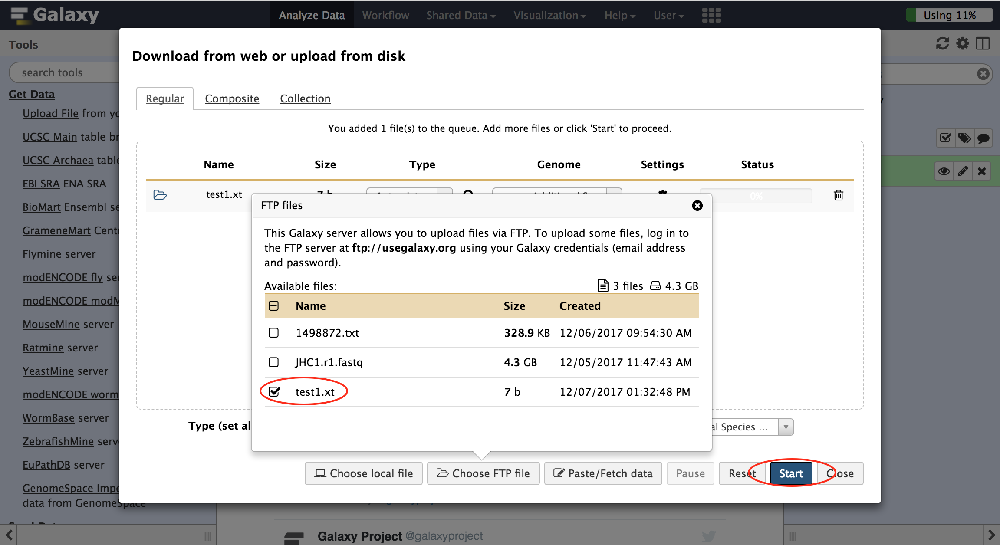
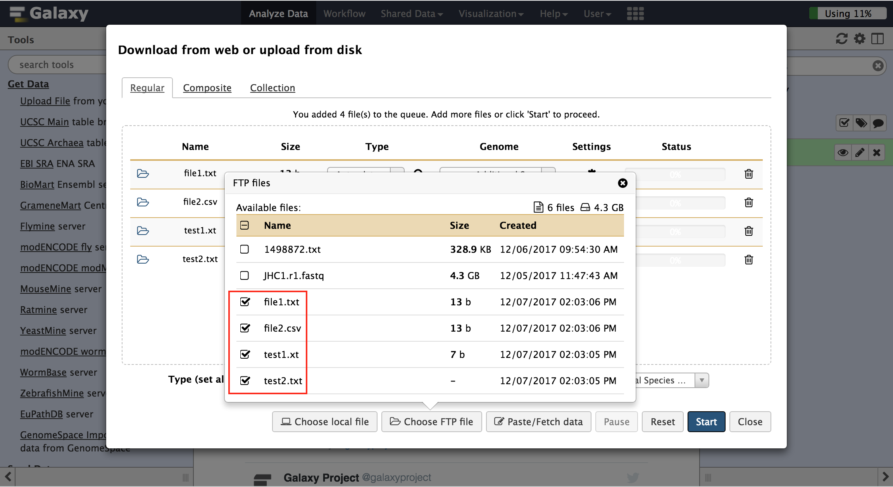

Galaxy has limit on the size of uploaded files. Any thing larger than 2G requires transferring with FTP. To transfer files to a Galaxy instance with FTP, the target Galaxy has to have FTP data transfer enabled. And you will need your account email and password from the target Galaxy to transfer data.
Clicking User on the tool menu will display your account email.

Make sure your source server have SFTP or FTP client installed. Go to the directory where you have files that you have to transfer to the Galaxy.
For example, I want to transfer some files in the path /home/mchen33/ftp-transfer-dir at my local server to the Galaxy. Below is the content of directory:
.
├── test1.xt
├── test2.txt
└── test_dir
├── file1.txt
└── file2.csvChange the working path to the directory
cd /home/mchen33/ftp-transfer-dirConnect to Galaxy with SFTP
In this example, our target Galaxy domain is usegalaxy.org. Run the command below and enter your password. You need to replace the email example@gmail.com with your own email.
lftp -u example@gmail.com usegalaxy.orgTransfer file test1.txt to Galaxy
If you successfully connect to Galaxy, your terminal prompt should look similar to this:
lftp example@gmail.com@usegalaxy.org:~>to transfer the file, run the command:
put test1.txtOnce the transfer completes, you can go to the Galaxy interface. Click Get Data->Upload File on the left panel. Then click Choose FTP file on the file upload interface. You will be able to see all FTP uploaded files.

Select the file and click Start to import the data to Galaxy history.

Transfer multiple files
You can transfer multiple files at once by providing multiple file paths.
put test1.xt test2.txt test_dir/file1.txt test_dir/file2.csvOnce the transfer is done, you will see multiple files available.
